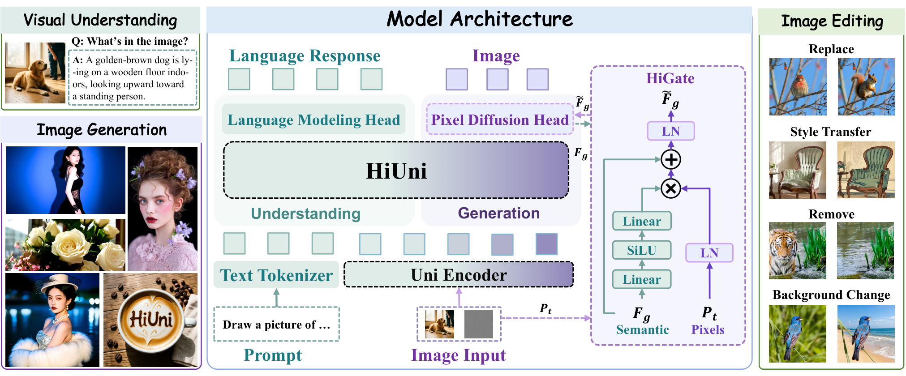
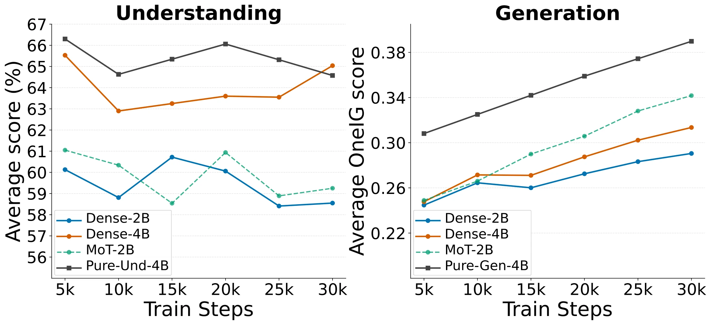
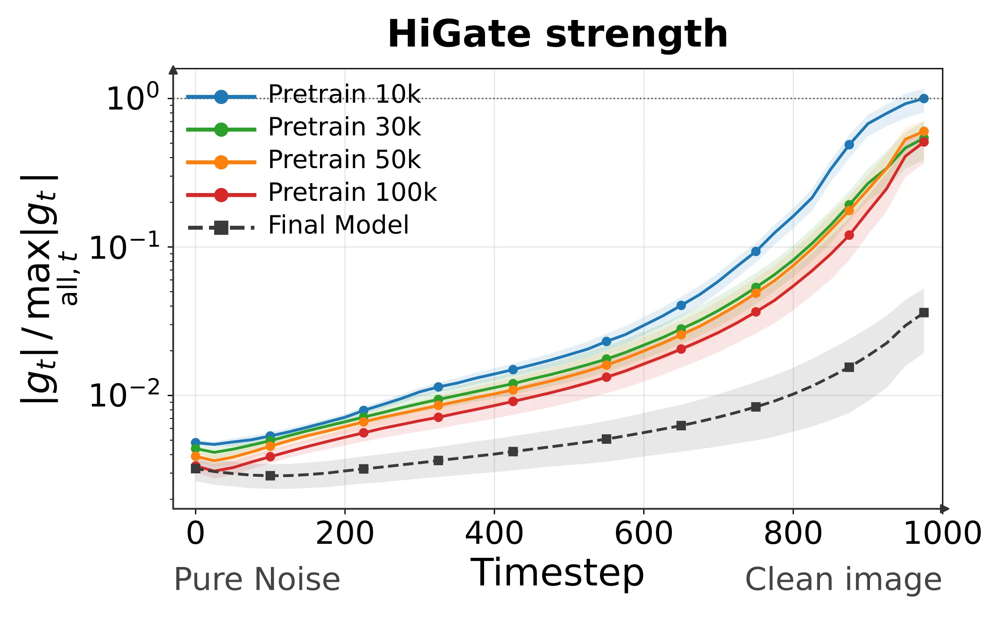
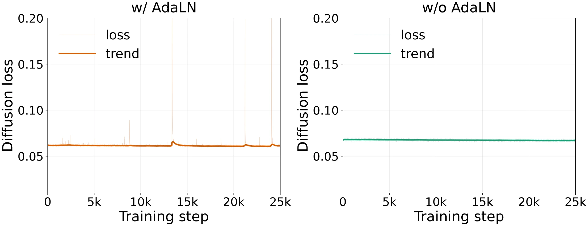

LM Head
Gen Head
Self-Attention
Und. QKVGen. QKV
UnderstandingGeneration
Text Tokenizer
Und. EncoderGen. Encoder
Baidu Inc.
Unified multimodal models (UMMs) aim to support visual understanding and generation within a single framework. However, prevailing approaches often separate their visual representations or backbone computation to accommodate the different requirements of the two tasks, which limits the degree of unification.
We present HiUni, which revisits this design choice and explores whether a pretrained VLM can be directly extended into a unified model with a high degree of sharing. HiUni reuses the same language-aligned ViT and dense Transformer backbone for both capabilities, while confining task-specific computation to the output side.
Such a design introduces two challenges: direct generation in pixel space is difficult to optimize, and the visual compression and semantic abstraction in pretrained VLMs may discard fine spatial details required for synthesis. HiUni introduces a Pixel Diffusion Head tailored to direct pixel-space optimization and a lightweight HiGate pathway that provides fine-grained spatial details near the output stage.
Experiments show that HiUni achieves a similar average understanding score to the pretrained VLM while attaining competitive performance on image generation and editing. Controlled comparisons further demonstrate that a single dense backbone can effectively support both capabilities without task-specific backbone computation, highlighting a simpler path toward unified multimodal modeling.
Existing UMMs either keep separate encoders for understanding and generation, route the two tasks through different experts (MoT), or cascade a VAE with a ViT. HiUni instead reuses the VLM's own visual pathway end to end: the same ViT tokens enter the same dense backbone, and only the generation head and HiGate are new.

Model size is reported as understanding (backbone) parameters + generation-specific parameters. ★ marks officially reported results.
HiUni is initialized from Qwen3-VL-INS-4B. Gains appear on MathVista and HallusionBench, declines on MMBench and OCRBench; understanding remains at the starting model's level across seven benchmarks (75.56 for HiUni vs 75.61 for Qwen3-VL-INS-4B).
| Model | Size | MathVistaMini | MMBenchEN | RealWorldQA | MMStar | HallusionBench | AI2D | OCRBench | OmniDocBench ↓ |
|---|---|---|---|---|---|---|---|---|---|
| Understanding-only models | |||||||||
| Qwen3-VL-INS★ | 4B | 73.7 | 85.1 | 70.9 | 69.8 | 57.6 | 84.1 | 88.1 | 0.24 |
| Qwen3-VL-THK★ | 4B | 79.5 | 86.7 | 73.2 | 73.2 | 64.1 | 84.9 | 80.8 | 0.23 |
| Qwen3-VL-THK | 4B | 76.5 | 86.2 | 74.1 | 70.3 | 65.8 | 84.5 | 79.6 | 0.22 |
| Unified multimodal models | |||||||||
| Harmon★ | 1.5B | – | 65.5 | 49.8 | 35.3 | – | – | 11.2 | – |
| Cheers★ | 1.5B | 50.5 | 70.4 | 60.9 | 50.9 | – | – | 58.4 | – |
| InternVL-U | 2B + 1.7B | 53.9 | 71.7 | 56.9 | 53.5 | 32.4 | 76.8 | 83.9★ | 0.83 |
| Janus-Pro | 7B | 44.7 | 79.2★ | 58.0 | 48.3 | 36.4 | 71.3 | 59.0 | 0.81 |
| Show-o2 | 7B | 51.8 | 79.3★ | 64.7★ | 56.6 | 36.2 | 78.6★ | 32.4 | 0.84 |
| TUNA★ | 7B | – | – | 66.1 | 61.2 | – | 79.3 | 74.3 | – |
| Bagel | 7B + 7B | 73.1★ | 85.0★ | 74.4 | 67.6 | 51.8 | 89.2 | 80.8 | 0.43 |
| SenseNova-U1 | 8B + 8B | 84.2★ | 90.3★ | 73.6★ | 78.3★ | 67.8★ | 91.7★ | 82.1★ | 0.28 |
| HiUni | 4B + 0.9B | 79.0 | 80.7 | 72.2 | 70.5 | 66.0 | 86.0 | 74.5 | 0.24 |
Qwen-Image-Bench (Chinese and English prompts), OneIG overall and LongText. Bold marks the best result among unified models, underline the second best. HiUni has the best Chinese overall score among unified models.
| Model | Size | Qwen-Image-BenchZH | Qwen-Image-BenchEN | OneIG | LongText | ||||||||||||
|---|---|---|---|---|---|---|---|---|---|---|---|---|---|---|---|---|---|
| Qual. | Aesth. | Align. | Real. | Creat. | Overall | Qual. | Aesth. | Align. | Real. | Creat. | Overall | ZH | EN | ZH | EN | ||
| Generation-only models | |||||||||||||||||
| GLM-Image | 9B + 7B | 49.26 | 50.64 | 47.90 | 44.69 | 45.23 | 48.19 | 49.86 | 49.98 | 47.49 | 44.25 | 44.67 | 47.86 | 0.511★ | 0.528★ | 0.979★ | 0.952★ |
| Qwen-Image★ | 20B | 48.44 | 52.25 | 50.72 | 43.16 | 47.30 | 49.23 | 48.45 | 51.18 | 50.04 | 43.45 | 45.37 | 48.48 | 0.548 | 0.539 | 0.946 | 0.943 |
| HiDream-O1 | 8B | 48.61 | 49.75 | 49.53 | 43.97 | 40.96 | 47.58 | 48.84 | 49.69 | 49.53 | 43.80 | 41.05 | 47.59 | 0.518 | 0.521 | 0.978★ | 0.979★ |
| Unified multimodal models | |||||||||||||||||
| InternVL-U | 2B + 1.7B | 42.34 | 43.38 | 40.30 | 38.13 | 34.36 | 40.54 | 43.92 | 43.03 | 41.09 | 38.87 | 32.35 | 40.82 | 0.500★ | 0.500★ | 0.860★ | 0.738★ |
| Bagel | 7B + 7B | 46.11 | 45.88 | 40.27 | 39.74 | 32.69 | 42.15 | 45.90 | 47.20 | 43.48 | 40.30 | 34.83 | 43.45 | 0.370 | 0.361 | 0.310 | 0.373 |
| SenseNova-U1★ | 8B + 8B | 45.79 | 47.07 | 47.78 | 42.53 | 43.88 | 45.99 | 47.30 | 50.30 | 50.58 | 43.13 | 46.15 | 48.28 | 0.535 | 0.549 | 0.962 | 0.979 |
| UniSpace | 8B + 8B | 47.22 | 45.02 | 48.54 | 46.19 | 40.49 | 46.05 | 47.44 | 46.54 | 48.94 | 47.54 | 43.84 | 47.05 | 0.533★ | 0.561★ | – | – |
| HiUni | 4B + 0.9B | 46.73 | 50.00 | 50.45 | 43.09 | 45.62 | 47.98 | 47.63 | 50.52 | 48.78 | 43.70 | 44.15 | 47.70 | 0.524 | 0.538 | 0.963 | 0.954 |
ImgEdit (0–5) and GEdit (0–10, VIEScore protocol), both judged by GPT-5.2. HiUni ranks second among unified models on ImgEdit and on both GEdit splits.
| Model | Size | ImgEdit | GEditCN | GEditEN | |||||||||||||
|---|---|---|---|---|---|---|---|---|---|---|---|---|---|---|---|---|---|
| Add | Adjust | Extract | Replace | Remove | Backg. | Style | Hybrid | Action | Overall | SC | PQ | O | SC | PQ | O | ||
| Editing-only models | |||||||||||||||||
| Qwen-Image-Edit-2511 | 20B | 4.22 | 4.24 | 3.34 | 4.37 | 3.98 | 3.61 | 4.39 | 3.25 | 4.69 | 4.01 | 8.25 | 6.42 | 7.19 | 8.20 | 6.46 | 7.17 |
| LongCat-Image-Edit | 6B | 4.15 | 4.24 | 3.39 | 4.47 | 3.95 | 3.57 | 4.28 | 3.39 | 4.70 | 4.02 | 8.13 | 6.44 | 7.15 | 8.05 | 6.44 | 7.10 |
| Qwen-Image-2.1 | 7B | 4.17 | 4.24 | 2.16 | 4.48 | 4.13 | 3.75 | 4.27 | 3.15 | 2.89 | 3.69 | 7.60 | 6.45 | 6.73 | 7.91 | 6.40 | 6.92 |
| Unified multimodal models | |||||||||||||||||
| InternVL-U | 2B + 1.7B | 3.94 | 3.71 | 2.42 | 4.08 | 3.34 | 3.45 | 4.03 | 2.28 | 4.07 | 3.48 | 6.02 | 5.81 | 5.74 | 6.05 | 5.80 | 5.74 |
| Bagel | 7B + 7B | 3.49 | 3.36 | 1.17 | 3.69 | 2.82 | 3.06 | 3.80 | 2.59 | 3.82 | 3.09 | 7.37 | 5.71 | 6.31 | 7.31 | 5.68 | 6.27 |
| SenseNova-U1 | 8B + 8B | 3.82 | 3.96 | 2.44 | 4.20 | 3.11 | 3.59 | 4.47 | 3.09 | 4.20 | 3.65 | 8.19 | 6.20 | 7.05 | 8.04 | 6.14 | 6.94 |
| UniSpace | 8B + 8B | 4.06 | 4.01 | 3.00 | 4.32 | 3.99 | 3.52 | 4.07 | 3.16 | 4.25 | 3.82 | 7.72 | 5.84 | 6.57 | 7.88 | 5.87 | 6.68 |
| HiUni | 4B + 0.9B | 3.93 | 3.95 | 2.72 | 4.05 | 3.47 | 3.32 | 4.34 | 3.22 | 3.95 | 3.66 | 7.87 | 5.88 | 6.70 | 7.93 | 6.00 | 6.81 |
A chain-of-thought variant fine-tuned for 10K steps on UniReason-derived data, with no extra backbone or generation module.
| Model | Overall | Cultural | Time | Space | Biology | Physics | Chemistry |
|---|---|---|---|---|---|---|---|
| DeepGen 1.0★ | 0.57 | 0.65 | 0.41 | 0.72 | 0.39 | 0.59 | 0.45 |
| Bagel w/ CoT★ | 0.63 | 0.78 | 0.63 | 0.57 | 0.38 | 0.55 | 0.51 |
| SenseNova-U1-8B★ | 0.68 | 0.69 | 0.60 | 0.74 | 0.63 | 0.72 | 0.69 |
| SenseNova-U1-8B w/ CoT★ | 0.79 | 0.80 | 0.74 | 0.86 | 0.76 | 0.78 | 0.80 |
| Qwen-Image-2.0★ | 0.80 | 0.82 | 0.65 | 0.90 | 0.79 | 0.80 | 0.75 |
| GPT-Image-1.5★ | 0.83 | 0.89 | 0.69 | 0.88 | 0.80 | 0.76 | 0.78 |
| HiUni w/ CoT | 0.75 | 0.81 | 0.68 | 0.78 | 0.63 | 0.74 | 0.78 |
At the same total parameter budget, HiUni-Dense-4B beats HiUni-MoT-2B (two 2B branches) on all six understanding benchmarks (65.04 vs 59.23 average), at the cost of a ~9% lower OneIG average. Scaling the dense backbone from 2B to 4B gives +11.1% understanding and +7.9% OneIG.
| Model | Understanding | Generation | |||||||
|---|---|---|---|---|---|---|---|---|---|
| Name | Size | MMBenchEN | RealWorldQA | MMStar | HallusionBench | AI2D | OCRBench | Avg. | OneIG Avg. |
| HiUni-Dense-4B | 4B+0.5B | 72.60 | 65.49 | 53.93 | 48.96 | 77.95 | 71.30 | 65.04 | 0.314 |
| HiUni-Dense-2B | 2B+0.5B | 64.94 | 60.39 | 46.67 | 38.70 | 70.47 | 70.10 | 58.55 | 0.291 |
| HiUni-MoT-2B | 4B+0.5B | 67.97 | 63.27 | 47.00 | 35.33 | 71.76 | 70.02 | 59.23 | 0.345 |
| HiUni-Und-4B | 4B | 72.52 | 63.79 | 53.33 | 46.96 | 77.85 | 73.00 | 64.58 | – |
| HiUni-Gen-4B | 4B+0.5B | – | – | – | – | – | – | – | 0.390 |

Both residual sources improve generation over removing the gate; raw pixel features work best (OneIG 0.267 → 0.284 with ViT features → 0.314 with pixels), while the understanding average barely moves (65.04–65.17). The learned gate stays weak at high noise and strengthens near the clean image, and early checkpoints rely on it more.
| HiGate input | MMB | RWQA | MMStar | HallB | AI2D | OCRB | OneIG |
|---|---|---|---|---|---|---|---|
| Pixel Features | 72.60 | 65.49 | 53.93 | 48.96 | 77.95 | 71.30 | 0.314 |
| ViT Features | 74.61 | 67.45 | 53.07 | 49.05 | 77.82 | 69.00 | 0.284 |
| No Gate | 72.91 | 65.88 | 54.13 | 46.70 | 77.75 | 73.00 | 0.267 |

Adding image-editing supervision raises the understanding average from 62.64 to 64.49 (gains on four of six benchmarks), while OneIG dips slightly, a mix of positive transfer and mild interference.
| MMB | RWQA | MMStar | HallB | AI2D | OCRB | Avg. | OneIG | |
|---|---|---|---|---|---|---|---|---|
| w/o Editing data | 69.58 | 64.58 | 50.20 | 48.43 | 72.54 | 70.50 | 62.64 | 0.538 |
| w/ Editing data | 72.29 | 66.80 | 55.00 | 43.83 | 79.24 | 69.80 | 64.49 | 0.528 |
With block-wise AdaLN, the Pixel Diffusion Head frequently produced abrupt loss spikes in pixel space. Replacing it with a <time> token and a single final modulation gives smoother training. The two runs come from different development stages, so this is a qualitative comparison.

Drag the slider (or focus it and use the arrow keys) to reveal the edited result.
@misc{hiuni2026,
title = {HiUni: Harmonizing Understanding and Generation in Shared Visual Space},
author = {ERNIE Team},
year = {2026},
note = {Preprint}
}HiUni is built on Qwen3-VL. Training uses Megatron-Bridge, Megatron-LM and the NeMo container, with attention masks from FlashMask. The x-prediction objective follows JiT. We thank the authors of these projects and of the open benchmarks used in our evaluation.